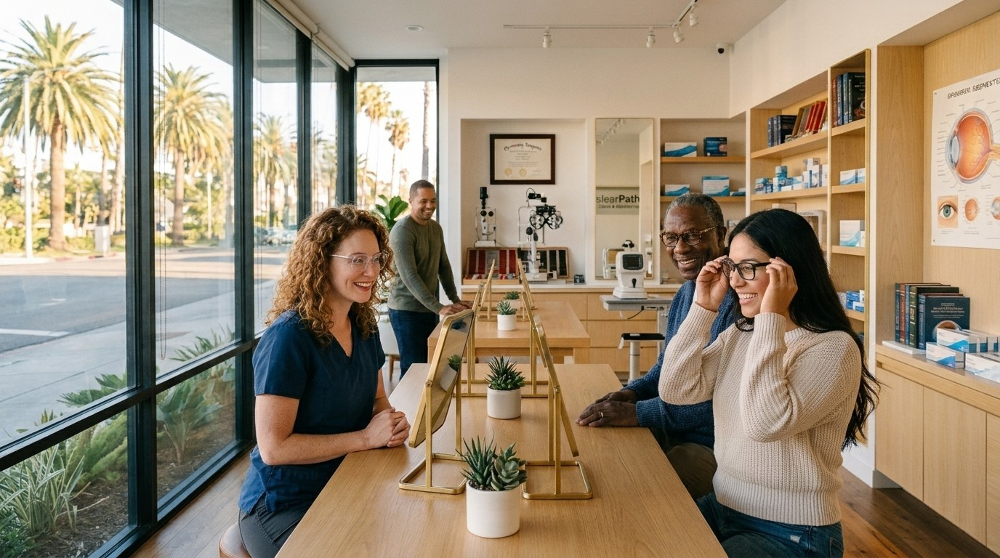

Comprehensive Eye Care Services
Combining advanced retinal imaging with personalized clinical consultations.
Comprehensive Eye Exams
Full-spectrum ocular health assessments, digital retinal photography, and precision refraction tailored to your visual lifestyle.
Specialty Contact Lenses
Custom corneal mapping and fittings for daily disposables, toric lenses for astigmatism, scleral lenses, and multifocals.
Curated Optical Boutique
Handcrafted independent frames paired with high-index, anti-reflective, and blue-light filtering lens technology.
Personalized Fittings & 24/7 Digital Concierge
From selecting handcrafted frames with our clinical team to checking appointment availability around the clock, every detail of your visit is designed around comfort and clarity.
- One-on-one optical styling & frame consultations
- Instant exam pricing & policy answers via chat
- Guided appointment request intake 24/7
"Click the chat bubble in the bottom-right corner anytime to ask about exam pricing, weekend hours, or to request an appointment slot."

Clinic Hours, Location & Insurance
Clinic Address
ClearPath Vision & Optometry
18450 Tamiami Trail (US-41, Mile Marker 38)
Everglades Outpost, FL 33194
Serene gateway clinic located west of Miami along the Tamiami corridor.
Hours of Operation
Monday – Friday: 9:00 AM – 6:00 PM
Saturday: 9:00 AM – 2:00 PM
Sunday: Closed
Accepted Vision & Medical Plans
We proudly accept VSP, EyeMed, Davis Vision, Spectera, Medicare, and most major medical insurance providers.